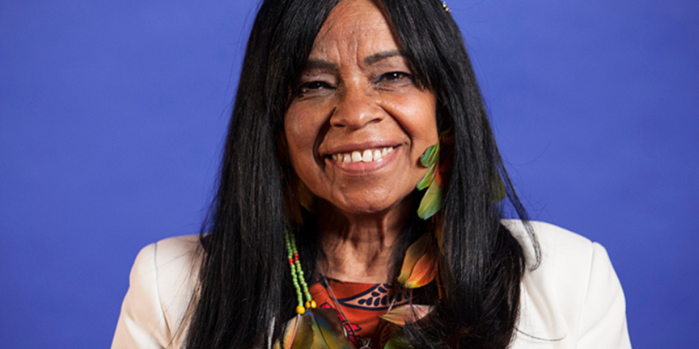

Quem é Eliane Potiguara?
Eliane Potiguara, nascida em 1950 no Rio de Janeiro, é uma escritora, educadora e ativista indígena do povo Potiguara. Formada em Letras e Educação pela UFRJ, ela dedicou sua vida à defesa dos direitos dos povos indígenas e das mulheres. Em 1988, fundou a Rede Grumin de Mulheres Indígenas, uma organização voltada para a promoção dos direitos dessas mulheres e a preservação cultural. Sua obra mais conhecida, Metade Cara, Metade Máscara (2004), mistura ficção e autobiografia para tratar da identidade indígena e dos desafios sociais. Reconhecida internacionalmente, Eliane foi indicada ao Prêmio Nobel da Paz em 1999 por sua atuação em defesa dos direitos humanos e indígenas.